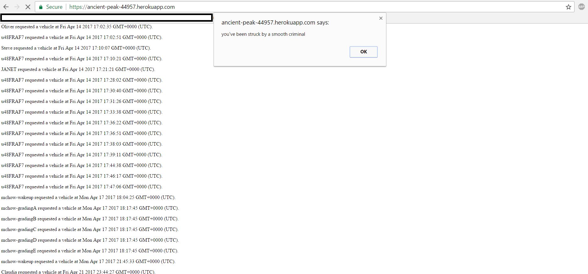
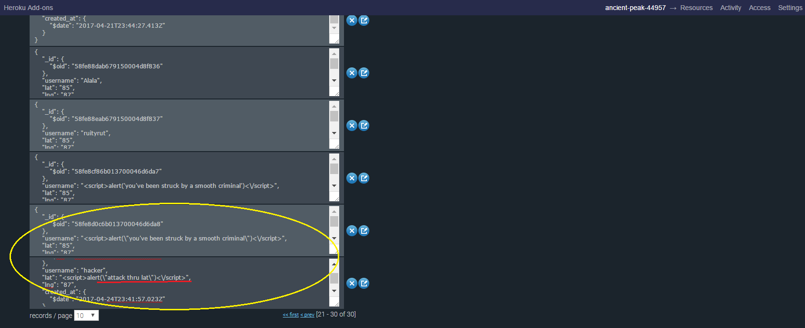

Introduction
The product is a web application server that maintains and serves locations of passengers and vehicles (username, latitude, and longitude) for a long period of time. User can post such information to the server to store it, searching for posted vehicle's information, and see the information of what the passengers from five minutes ago posted.
I am hired as a security consultant to document and resolve the security and privacy issues in the application (although not actually resolve it).
Methodology
I used Postman for my POST method injection. I alter the username, lat, and lng field to script tags to inject my attacks. For the GET method, I tried changing the query for /vehicle.json for it to reveal sensitive or private information. However, since my partner's code has not correctly implemented that portion, the database is impossible to be accessed, even with legitimate query.
Abstract of Findings
The most vulnerable feature of my partner's server is its instability. The server is continuously susceptible to application error, which lasts for a period of time after certain requests for POST method or GET method, especially with the /vehicle.json path. Moreover, there is no check if the server is working, which would lead to the application not working on its own if there are unexpected occurences to the database. In addition, the code does not have proper input sanitation for username, and even lat and lng variables, which should have been checked if they are legitimate numbers. This allows attackers to inject code to the database and can cause serious problems to the application.
Issues Found
-
- Cross-site scripting
- Location: Database and home index
- Severity: High => Attackers can inject script that creates annoying pop-ups, or to a greater magnitude, redirects this application to other pages, as well as many other harmful things to the application.
- Description of issue: I used Postman to post javascript scripts as username to the server, which were accepted. When the application page loads and reads the username, the script is enabled, and the the damaged is done

- Resolution: Check user's input to make sure funky characters are not allowed. This step is very simple and only required one short line of code before accepting the user's input into the database.
-
- Database Injection
- Location: Database
- Severity: Medium => Since the code has not implemented the portion that actually reads the latitude and longitude, cross-site scripting for these variables is limited. However, attackers still can inject unwanted data to the server, potentially overloading the database, and giving incorrect results to users who requested data.
- Description of issue: The code does not check whether the lat and lng inputs are actual numbers or not (which is a requirement for the assignment), therefore, one can insert whatever data they want to the database under the variable names of lat and lng. This will be troublesome if the code actually reads the variables, as it can enable cross-site scripting. But before that, damage has already been done, since precious memory is already being wasted on these illegitimate inputs.

- Resolution: Using a parseFloat function for the user's inputs for lat and lng would convert those input into numbers. To be even more cautious, one can run a check to see if the numbers are technically sound as latitude and longitude or not before inserting them to the database.
-
- Application Error
- Location: The whole application, including the POST route
- Severity: High => The application page is not at all stable. One simple random POST input or GET reqest query could render the application error for the page. Even though the page can later be working again (after a few minutes), GET and POST requests would still frequently cause the page to encounter application error. This could easily frsutrate any users, and furthermore could fail the entire purpose of a server, which should be running all the time.

- Resolution: Having a check on the database to make sure that the application is still running (albeit not with full functions) when the database is down would be beneficial. In addition, more checks on data inputs and database requests must be implemented to reduce the risks of overloading the database and improper access to it.
Conclusion
The site is not working to its best extend due to the application error. This makes it hard for testing for privacy and security vulnerabilities, since the application frequently goes down due to the error. Moreover, the vehicle.json path is not working at all. Considerations: Remove the "response.set" and "indexPage" portion of the /vehicle.json portion so it can (hopefully) works properly; check if the database is working, then make the application do something if the database is not available to maybe avoid the application error; remove the unused mLab database to possibly avoid the application error (the application currently has 2); validate all user inputs to eliminate funky characters that would enable cross-site scripting; limit user's access to the database by validating the query string and database information in the source code.
References